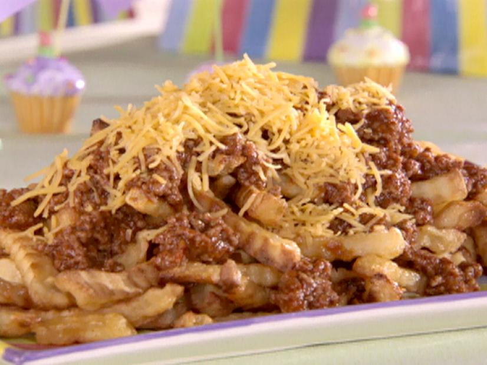

Chili Fries

Cheese fries have been said to have grown in popularity in the United States after canned cheese products such as Cheez Whiz were introduced in 1952.
These deliciose, thick, falvour jam-packed dishes have been an American classic for a long time and I am not surprised how it managed to stay so relevent.
To make these, you'll need the following;
- 1/2 bag (about 16 ounces) french-fried potatoes (recommended: Ore-Ida Golden Crinkles)
pound ground beef
- 1 (12-ounce) bottle chili sauce (recommended: Heinz)
- 1 packet chili seasoning (recommended: Lawry's)
- 1/2 cup water
- 1 teaspoon Worcestershire sauce
- 1 tablespoon yellow mustard
- 1/2 teaspoon onion powder
- Shredded Cheddar, optional (recommended: Kraft)
Steps: We'll be using an oven for this
- Preheat oven to 450 degrees F.
- Lay fries in a single layer on a baking sheet. Bake in preheated oven for 20 to 25 minutes, turning halfway through cooking, until crisp and golden.
- In a large pot over medium heat, break up ground beef and brown, stirring constantly to break up all the clumps to fine ground.
- Add remaining ingredients through the onion powder. Bring to boil. Lower heat and simmer for 30 minutes.
Serve hot fries on a plate smothered with chili and topped with shredded cheese, if using.